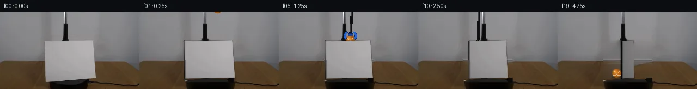

![首帧]()

Round 00
2026-11-04T22:06:08.824530+00:00像素候选变化代码 +341/−0inspection 更新
pixels a3b494448271801a · code 998379b1da056c94
查看本轮 generate.py 真实 diff
--- previous/generate.py
+++ current/generate.py
@@ -0,0 +1,341 @@
+"""
+PixelWorld case_0005 generation.
+
+Clockwise-rotating white cardstock on a black turntable; a blue-black grabber
+lowers an orange tennis ball behind the card, sets it on the table and withdraws.
+
+All pixels are produced locally (numpy / OpenCV drawing, warps and one small
+sparse harmonic fill); no external models, references or network.
+Frame 00 is the untouched first_frame.png.
+"""
+from pathlib import Path
+import numpy as np
+import cv2
+import scipy.sparse as sp
+from scipy.sparse.linalg import spsolve
+from PIL import Image, ImageDraw, ImageFont
+import artifact_io
+
+WS = Path(__file__).parent
+SRC = np.array(Image.open(WS / 'first_frame.png').convert('RGB'))
+H, W = SRC.shape[:2] # 144, 256
+assert (H, W) == (144, 256)
+YY, XX = np.mgrid[0:H, 0:W].astype(np.float32)
+
+# ---------------------------------------------------------------- geometry
+CARD0 = np.array([[82.0, 54.4], [170.7, 53.0], [175.8, 123.4], [83.0, 124.8]], np.float32)
+AX = 129.0 # rotation axis column
+DISK = dict(cx=130.0, cy=130.0, rx=47.0, ry=5.2)
+BALL_R = 8.5
+DEG_PER_FRAME = 4.0
+
+
+# ================================================================ background
+def card_hole_mask(dilate=2):
+ m = np.zeros((H, W), np.uint8)
+ cv2.fillConvexPoly(m, np.round(CARD0).astype(np.int32), 1)
+ if dilate:
+ m = cv2.dilate(m, np.ones((3, 3), np.uint8), iterations=dilate)
+ return m.astype(bool)
+
+
+def harmonic_wall(out, hole):
+ """Laplacian fill of the wall portion of the card hole (rows 0..90)."""
+ yt, yb = 0, 91
+ h = hole[yt:yb]
+ ny, nx = yb - yt, W
+ N = ny * nx
+ hys, hxs = np.where(h)
+ flat = np.arange(N)
+ hflat = h.ravel()
+ diag = np.ones(N, np.float32)
+ cnt = np.full(len(hys), 4.0, np.float32)
+ hy, hx = hys + yt, hxs
+ cnt[hy == yt] -= 1; cnt[hy == yb - 1] -= 1
+ cnt[hx == 0] -= 1; cnt[hx == W - 1] -= 1
+ diag[flat[hflat]] = cnt
+ rr = [flat]; cc = [flat]; dd = [diag]
+ for dy, dx in ((-1, 0), (1, 0), (0, -1), (0, 1)):
+ iy, ix = hys + dy, hxs + dx
+ ok = (iy >= 0) & (iy < ny) & (ix >= 0) & (ix < nx)
+ rr.append(hys[ok] * nx + hxs[ok])
+ cc.append(iy[ok] * nx + ix[ok])
+ dd.append(np.full(ok.sum(), -1.0, np.float32))
+ A = sp.csr_matrix((np.concatenate(dd), (np.concatenate(rr), np.concatenate(cc))), (N, N))
+ A.sum_duplicates()
+ for c in range(3):
+ b = np.zeros(N, np.float32)
+ known = SRC[yt:yb, :, c].astype(np.float32).ravel()
+ b[~hflat] = known[~hflat]
+ sol = spsolve(A, b).reshape(ny, nx)
+ out[yt:yb, :, c] = np.where(h, sol, out[yt:yb, :, c])
+
+
+def build_background():
+ src = SRC.astype(np.float32)
+ hole = card_hole_mask()
+ out = src.copy()
+
+ # ---- wall harmonic fill ----
+ harmonic_wall(out, hole & (YY < 91))
+ # feather 2px fringe against the original frame
+ hf = (hole & (YY < 91)).astype(np.float32)
+ fringe = (cv2.GaussianBlur(hf, (0, 0), 1.3) - hf)[..., None]
+ out += fringe * (src - out)
+ rng = np.random.default_rng(7)
+ nz = cv2.GaussianBlur(rng.normal(0, 1.0, (H, W, 3)).astype(np.float32), (0, 0), 0.7)
+ out += nz * hf[..., None]
… diff truncated; 254 more lines …